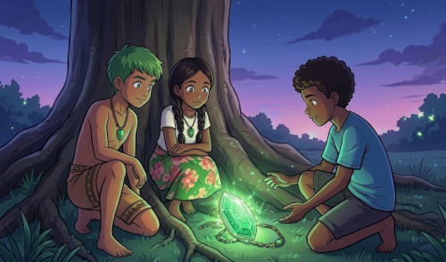
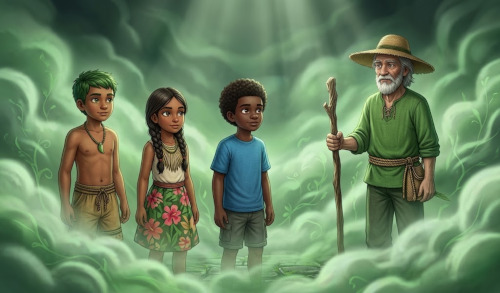
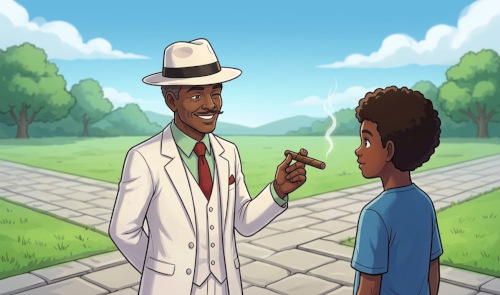
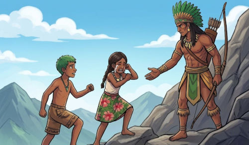
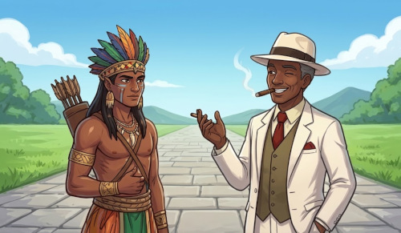
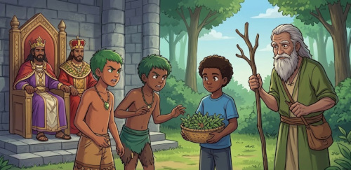
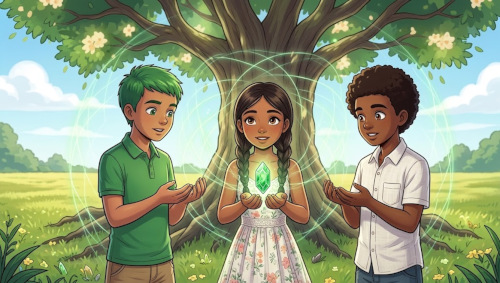

Três primos—Kauã, Clara e Leo—são transportados para o mundo invisível do Reino da Jurema Sagrada após encontrarem um amuleto antigo na floresta. Para retornar para casa e salvar o equilíbrio entre a natureza e a humanidade, eles devem atravessar sete cidades encantadas e aprender lições valiosas com a Cabocla Jurema, o Mestre Zé Pilintra, o Caboclo Tupinambá, o Mestre Junco Verde e os Reis do Catimbó. Uma jornada cheia de mistério, coragem, autoconhecimento e respeito às tradições ancestrais.
Capítulo 1: O Amuleto sob a Juremeira

Kauã, Clara e Leo adoravam explorar as matas ao redor da fazenda da avó. Certo tarde, ao pararem sob o tronco retorcido de uma antiga árvore de Jurema, Leo avistou um brilho entre as raízes: uma pedra de quartzo verde presa a um cordão de sementes.
Ao tocar a pedra, o ar ao redor tremeu e um perfume suave de ervas tomou a mata.
Não deveríamos mexer no que não é nosso,
Leo alertou Clara, sentindo um arrepio.
A curiosidade sem respeito é como pisar em folhas secas: faz barulho e estraga o caminho disse uma voz suave atrás deles.
Uma mulher alta, vestida com saia verde e penas brilhantes nos cabelos, surgiu entre a névoa. Era a Cabocla Jurema.
Bem-vindos ao mundo dos Encantados disse ela. Vocês abriram a passagem. Para voltar para casa, precisarão provar que possuem sabedoria no coração.>
"A curiosidade é uma porta maravilhosa, mas o respeito é a chave que garante que você volte em segurança."
Capítulo 2: O Nevoeiro do Mestre Junco Verde

A Cabocla guiou os jovens até a primeira cidade espiritual: o Juncal. Uma neblina densa cobria o chão, e os meninos começaram a se desesperar, andando em círculos.
De repente, um homem com chapéu de palha e vestes verdes apareceu, segurando um cajado de madeira firme. Era o Mestre Junco Verde.
— Mestre, não conseguimos enxergar o caminho! gritou Kauã, impaciente.
A apressada vista do corpo cega os olhos da alma respondeu o Mestre, batendo o cajado suavemente no chão. A paciência é a virtude que limpa qualquer nevoeiro. Pare, respire e escute a mata.
Leo pecebeu que, ao acalmar a mente, o som do riacho indicava a direção correta. A neblina se dissipou.
"A apressamento cega a mente; só a paciência revela as respostas que já estão à nossa frente."
Capítulo 3: A Sabedoria do Mestre Zé Pilintra

Ao chegarem a um cruzamento de caminhos de pedra, os primos encontraram um homem elegante de terno branco, chapéu panamá e um sorriso acolhedor no rosto: o Mestre Zé Pilintra.
Leo tentou enganar o Mestre para passar mais rápido pela travessia, inventando uma desculpa sobre estarem com pressa por causa de um perigo falso.
Zé Pilintra soltou uma risada sonora e balançou o chapéu.
— Ah, meu jovem... A esperteza que engana os outros é a mesma que constrói a própria armadilha disse Zé Pilintra, olhando no fundo dos olhos de Leo. No mundo dos homens ou dos Encantados, a malandragem verdadeira é usar a inteligência para fazer o bem, nunca para trapacear.
Envergonhado, Leo pediu desculpas sinceras, e o Mestre abriu o caminho com uma saudação respeitosa.
"A verdadeira inteligência reside na honestidade; usar de esperteza para enganar é o caminho mais rápido para a solidão."
Capítulo 4: A Força do Caboclo Tupinambá

A jornada seguiu até uma serra alta e íngreme. Clara, sentindo-se a mais fraca do grupo, sentou-se em uma rocha e começou a chorar, dizendo que não conseguiria subir.
Do topo da rocha, surgiu a figura imponente do Caboclo Tupinambá, com seu arco e flecha de madeira nobre. Ele desceu a montanha e estendeu a mão para a garota.
A verdadeira força de um guerreiro não está nos músculos dos braços, mas na firmeza de sua vontade disse o Caboclo com voz profunda. Se você acreditar que já perdeu, a montanha venceu. Se acreditar que pode, cada passo se torna vitória.
Clara enxugou as lágrimas, segurou a mão do guerreiro e liderou o grupo até o topo.
"O tamanho do obstáculo não importa quando a nossa determinação é maior do que o nosso medo."
Capítulo 5: O Tribunal dos Reis do Catimbó

No centro da floresta sagrada, os jovens chegaram à Grande Cidade de Jurema, onde os Três Reis do Catimbó (Rei Salomão, Rei Tupinambá e Rei Herrá) aguardavam no trono de madeira entalhada.
Kauã e Leo começaram a discutir sobre quem havia sido o mais corajoso da viagem até ali, culpando um ao outro pelos erros cometidos.
O Rei Salomão levantou o cetro e fez-se silêncio.
A vaidade divide os irmãos, mas a humildade os une declarou o Rei. Nenhum de vocês chegaria aqui sozinho. O orgulho cega o homem para as virtudes do seu próximo.
Os primos se olharam, abraçaram-se e reconheceram a importância de cada um na caminhada.
"A vaidade nos isola; reconhecer o valor do outro é o que nos torna invencíveis."
Capítulo 6: O Guardião das Ervas e da Cura

Para abrir o portal definitivo de volta ao mundo físico, as crianças precisavam preparar uma oferenda de respeito à natureza. No entanto, Leo quase arrancou uma planta rara pela raiz sem pedir licença.
Um idoso de olhar sereno e cheiro de jurema preta aproximou-se: o Mestre Caiana.
A terra não nos pertence, crianças. Nós é que pertencemos à terra ensinou o Mestre com voz pausada. Quando retirar uma folha, peça licença e agradeça. O equilíbrio da vida depende do quanto sabemos cuidar daquilo que nos sustenta.
Com todo o respeito, colheram apenas o necessário, cantando uma cantiga em agradecimento aos espíritos da mata.
"A natureza é um templo sagrado; cuidar do meio ambiente é cuidar do nosso próprio futuro."
Capítulo 7: O Regresso e a Chama no Coração

Um portal de luz dourada abriu-se no tronco da grande Juremeira. A Cabocla Jurema reuniu os três primos ao redor da luz.
Vocês aprenderam sobre respeito, paciência, honestidade, coragem, humildade e amor à terra disse a Cabocla, sorrindo. O portal para o nosso mundo se fecha para os seus olhos, mas as lições dos Encantados ficarão para sempre em seus corações.
Com um piscar de olhos, Kauã, Clara e Leo estavam de volta à fazenda da avó, exatamente sob a mesma árvore de Jurema, enquanto o sol se punha no horizonte. Eles olharam para as próprias mãos e souberam que nunca mais seriam os mesmos: agora, eram protetores da natureza e guardiões do respeito à ancestralidade.
"As grandes transformações da vida não mudam o mundo ao nosso redor, mas transformam a forma como vivemos nele."
Créditos
Esta obra ficcional e educativa foi inspirada na tradição oral, mitológica e cultural da Jurema Sagrada (também conhecida como Catimbó de Jurema), religião de matriz indígena e afro-brasileira originária do Nordeste do Brasil.
Tradição Oral do Catimbó-Jurema: Registros e encantarias sobre os Mestres (Zé Pilintra, Junco Verde, Caiana) e Caboclos (Jurema, Tupinambá).
CASCUDO, Luís da Câmara. Notas sobre o Catimbó. Coleção de Folclore e Tradições Populares do Nordeste.
ANDRADE, Mário de Andrade. Dança dos Encantados: Música de Feitiçaria no Brasil.